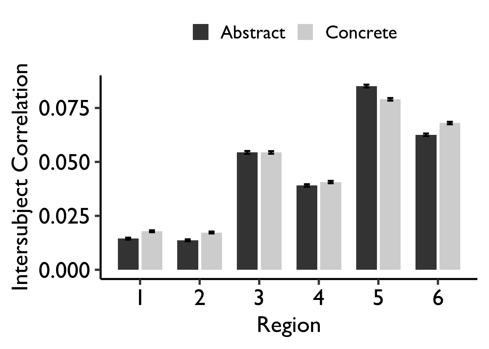
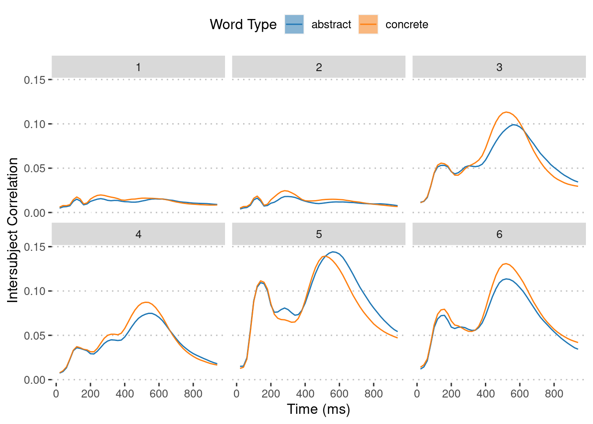
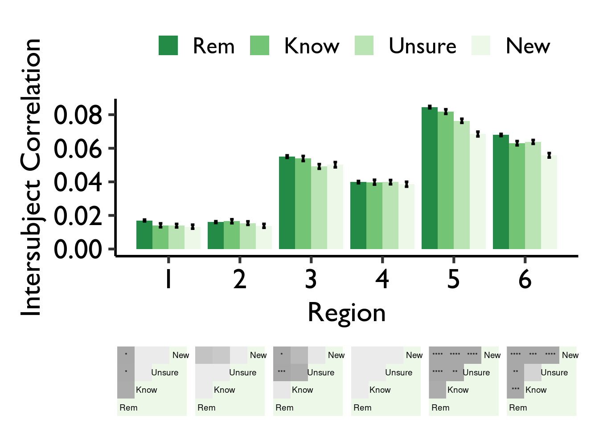
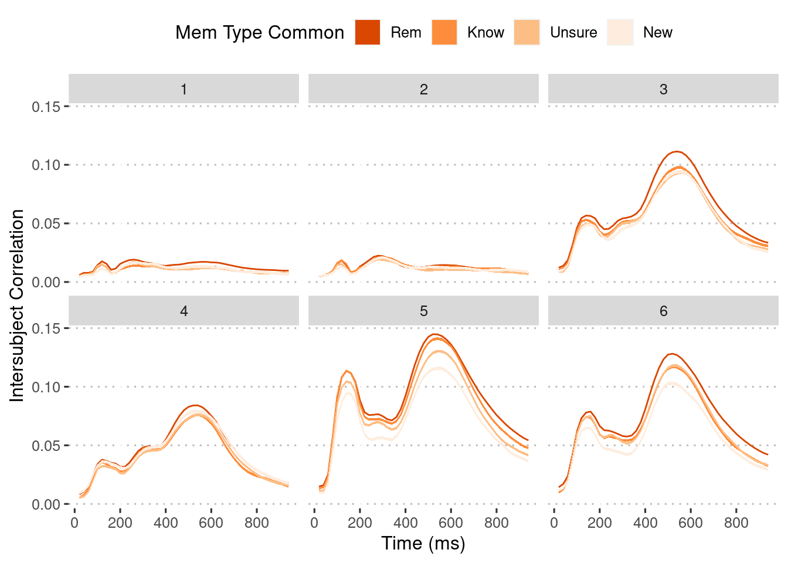
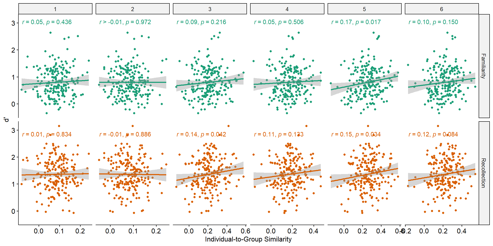
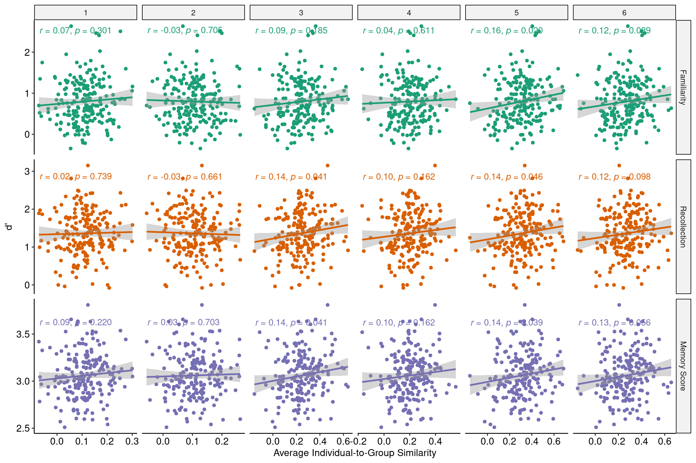
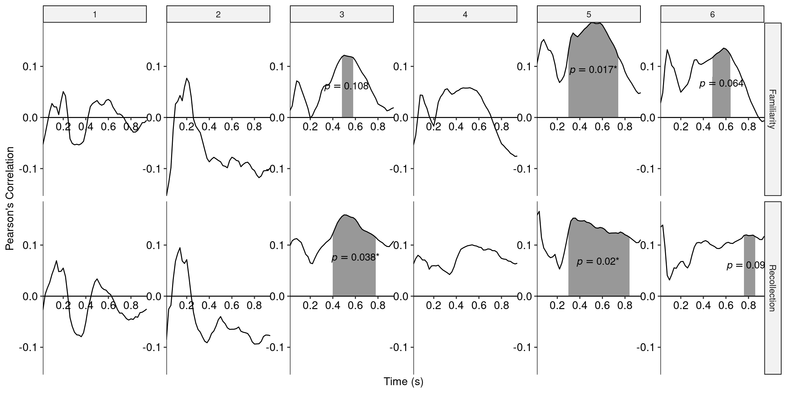

Code
devtools::load_all()Liang Zhang
Jintao Sheng
targets::tar_read(rsa_inter_common_trials) |>
summarise(
mean_se(fisher_z),
.by = c(region_id, word_category)
) |>
ggplot(aes(region_id, y, ymax = ymax, ymin = ymin)) +
geom_col(aes(fill = word_category), position = position_dodge(width = 0.4), width = 0.4) +
geom_errorbar(aes(group = word_category), position = position_dodge(width = 0.4), width = 0) +
scale_x_continuous(name = "Region", breaks = scales::breaks_width(1)) +
scale_y_continuous(name = "Intersubject Correlation") +
ggsci::scale_fill_d3(name = "Word Type") +
ggpubr::theme_pubclean()
targets::tar_read(summary_word_cat_rsa_inter_common_trials_window) |>
ggplot(aes(window_id, y, ymax = ymax, ymin = ymin)) +
geom_line(aes(color = word_category, group = word_category)) +
geom_ribbon(aes(fill = word_category), alpha = 0.5) +
scale_x_continuous(name = "Time (ms)", labels = \(x) x * 20) +
scale_y_continuous(name = "Intersubject Correlation") +
ggsci::scale_fill_d3(name = "Word Type") +
ggsci::scale_color_d3(name = "Word Type") +
facet_wrap(vars(region_id)) +
ggpubr::theme_pubclean()

targets::tar_read(rsa_inter_common_trials) |>
summarise(
mean_se(fisher_z),
.by = c(region_id, response_type_shared)
) |>
ggplot(aes(region_id, y, ymax = ymax, ymin = ymin)) +
geom_col(aes(fill = response_type_shared), position = position_dodge(width = 0.4), width = 0.4) +
geom_errorbar(aes(group = response_type_shared), position = position_dodge(width = 0.4), width = 0) +
scale_x_continuous(name = "Region", breaks = scales::breaks_width(1)) +
scale_y_continuous(name = "Intersubject Correlation") +
scale_fill_brewer(name = "Mem Type Common", palette = "Oranges", direction = -1) +
ggpubr::theme_pubclean()
targets::tar_read(summary_word_mem_rsa_inter_common_trials_window) |>
ggplot(aes(window_id, y, ymax = ymax, ymin = ymin)) +
geom_line(aes(color = response_type_shared, group = response_type_shared)) +
geom_ribbon(aes(fill = response_type_shared)) +
scale_x_continuous(name = "Time (ms)", labels = \(x) x * 20) +
scale_y_continuous(name = "Intersubject Correlation") +
scale_color_brewer(
name = "Mem Type Common",
palette = "Oranges", direction = -1,
aesthetics = c("colour", "fill")
) +
facet_wrap(vars(region_id)) +
ggpubr::theme_pubclean()

The indicator calculation is based on (Manns et al. 2003).
mem_types_report <- c("knowadj" = "Familiarity", "remember" = "Recollection")
targets::tar_load(mem_perf)
arrow::read_parquet(targets::tar_read(file_rs_group_whole)) |>
inner_join(mem_perf, by = "subj_id", relationship = "many-to-many") |>
filter(mem_type %in% names(mem_types_report)) |>
ggplot(aes(fisher_z, dprime, color = mem_type)) +
geom_point() +
stat_smooth(method = "lm", formula = y ~ x) +
ggpmisc::stat_correlation(
ggpmisc::use_label(c("r", "p.value")),
small.r = TRUE,
small.p = TRUE
) +
scale_color_brewer(palette = "Dark2", guide = "none") +
scale_x_continuous(
name = "Individual-to-Group Similarity",
breaks = scales::breaks_pretty(n = 4)
) +
scale_y_continuous(name = "d'") +
facet_grid(
rows = vars(mem_type),
cols = vars(region_id),
labeller = labeller(mem_type = mem_types_report),
scales = "free_x",
) +
ggpubr::theme_pubr()
arrow::read_parquet(targets::tar_read(file_rs_group_trial)) |>
summarise(
mean_fisher_z = mean(fisher_z, na.rm = TRUE),
.by = c(region_id, subj_id)
) |>
inner_join(mem_perf, by = "subj_id", relationship = "many-to-many") |>
filter(mem_type %in% names(mem_types_report)) |>
ggplot(aes(mean_fisher_z, dprime, color = mem_type)) +
geom_point() +
stat_smooth(method = "lm", formula = y ~ x) +
ggpmisc::stat_correlation(
ggpmisc::use_label(c("r", "p.value")),
small.r = TRUE,
small.p = TRUE
) +
scale_color_brewer(palette = "Dark2", guide = "none") +
scale_x_continuous(
name = "Average Individual-to-Group Similarity",
breaks = scales::breaks_pretty(n = 4)
) +
scale_y_continuous(name = "d'") +
facet_grid(
rows = vars(mem_type),
cols = vars(region_id),
labeller = labeller(mem_type = mem_types_report),
scales = "free_x",
) +
ggpubr::theme_pubr()
clusters_p_pred_perf <- targets::tar_read(clusters_p_pred_perf) |>
filter(mem_type %in% names(mem_types_report))
stats_pred_perf <- targets::tar_read(stats_pred_perf) |>
filter(mem_type %in% names(mem_types_report))
stats_pred_perf |>
ggplot(aes(window_id, estimate)) +
geom_area(
data = stats_pred_perf |>
inner_join(
clusters_p_pred_perf,
by = join_by(region_id, mem_type, window_id >= start, window_id <= end)
),
alpha = 0.5
) +
geom_line() +
facet_grid(
rows = vars(mem_type),
cols = vars(region_id),
labeller = labeller(mem_type = mem_types_report)
) +
geom_text(
aes(mid, estimate / 2, label = label),
data = clusters_p_pred_perf |>
mutate(mid = round((start + end) / 2)) |>
inner_join(
stats_pred_perf,
by = join_by(region_id, mem_type, mid == window_id)
) |>
mutate(
label = str_glue(
"italic('p')=='{rstatix::p_mark_significant(p_perm)}'"
)
),
parse = TRUE
) +
scale_x_continuous(name = "Time (s)", labels = \(x) x * 0.02) +
scale_y_continuous(name = "Pearson's Correlation") +
ggh4x::coord_axes_inside(labels_inside = TRUE, expand = FALSE) +
ggpubr::theme_pubr() +
theme(
axis.title.y.left = element_text(
margin = margin(r = 30)
),
panel.spacing.x = unit(1.5, "lines")
)

